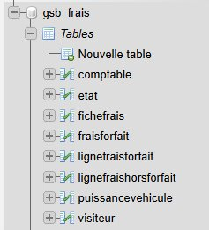
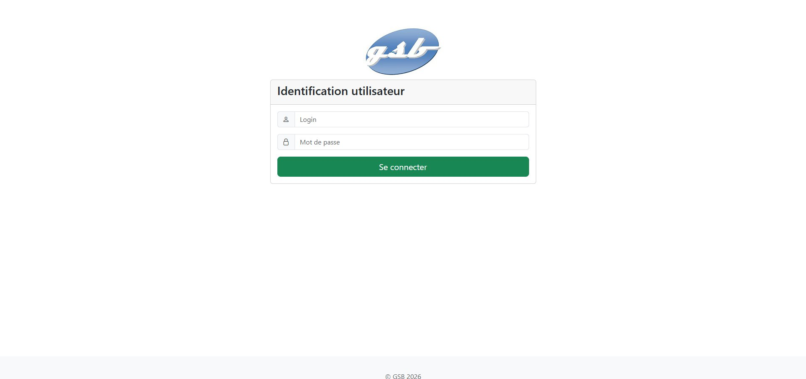
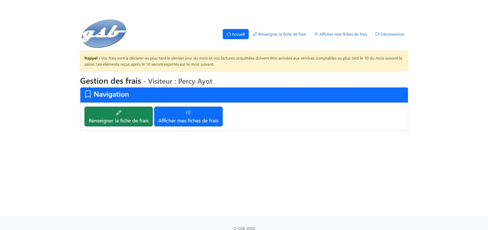
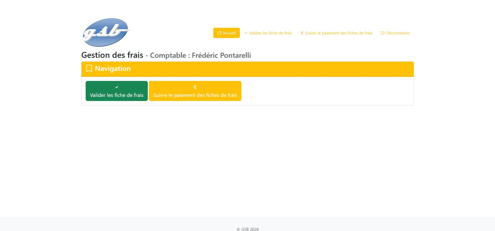
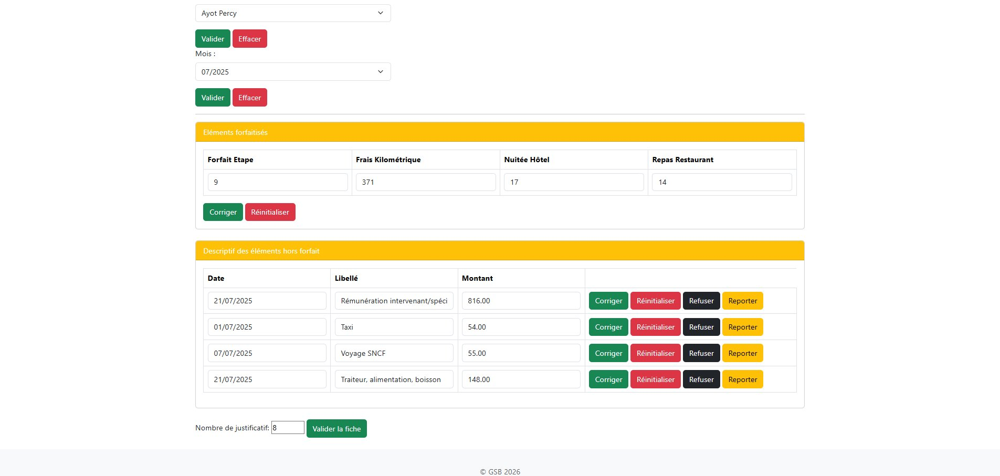
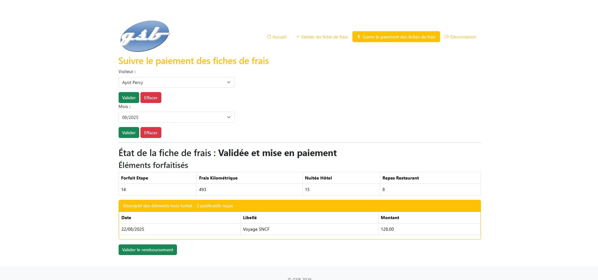

PHP (MVC) · MySQL · Bootstrap · PDO · phpDocumentor
Intranet métier de gestion des frais de déplacement des visiteurs médicaux d'un laboratoire pharmaceutique fictif. Reprise et extension d'une application existante en architecture MVC, développée sur plusieurs mois.
GSB (Galaxy Swiss Bourdin) est un laboratoire pharmaceutique fictif né de la fusion entre Galaxy et Swiss Bourdin, employant plus de 540 visiteurs médicaux sur le territoire français. Ces visiteurs génèrent de nombreux frais de déplacement, de restauration et d'hébergement que l'entreprise doit rembourser de façon uniforme et traçable.
Ce projet est un Atelier de Professionnalisation (AP) du BTS SIO 2ème année. Nous n'avons pas créé l'application from scratch : nous avons reçu une base fonctionnelle — la partie visiteur permettant de saisir des fiches de frais — et notre mission était d'y ajouter la partie comptable complète, ainsi que plusieurs évolutions techniques transverses. Le projet a été réalisé sur plusieurs mois avec la possibilité de collaborer avec nos camarades. C'était pour moi la première expérience de travail collaboratif sur un vrai projet partagé, et j'ai mis à profit les bonnes pratiques apprises lors de mon stage chez Phenix Info (dépôt GitHub, branches, commits clairs).
L'application distingue deux profils : les visiteurs médicaux et les comptables. Le cycle de traitement d'une fiche de frais suit un processus mensuel précis :
Le projet était découpé en 8 tâches. Voici le détail de chacune :
Développement de la page permettant au comptable de sélectionner un visiteur et un mois, d'afficher ses frais forfaitaires et hors forfait, de les corriger si nécessaire, puis de valider la fiche avec saisie du nombre de justificatifs reçus.
Page de suivi permettant de visualiser l'état d'avancement d'une fiche déjà validée et de confirmer sa mise en remboursement effectif.
Génération de la documentation avec phpDocumentor : description de l'arborescence, des classes, des méthodes et des accès aux données pour assurer la maintenabilité du code.
Un frais refusé ne doit pas être supprimé de la base mais exclu du calcul de remboursement.
Son libellé est préfixé de REFUSE pour conserver une trace métier visible
dans l'historique et auprès du visiteur.
Remplacement du stockage en clair par un hachage SHA-256. Cette tâche impliquait aussi de comprendre et d'expliquer pourquoi MD5 et SHA-1 sont considérés comme insuffisants (collisions connues, vitesse de calcul excessive facilitant les attaques par force brute).
Le barème kilométrique varie selon la puissance fiscale du véhicule.
Cette évolution a nécessité des modifications en base de données (table puissancevehicule),
dans le modèle PdoGsb, les contrôleurs et les vues concernées.
Intégration de la bibliothèque FPDF pour produire une version imprimable de la fiche de frais, utilisable à des fins administratives ou de vérification.
Ajout d'une logique de génération conditionnelle : le PDF n'est (re)généré que si la fiche a été modifiée depuis la dernière génération. Cette approche réduit les traitements inutiles et illustre une réflexion sur la performance et la qualité logicielle.
L'application suit une architecture Modèle-Vue-Contrôleur construite sans framework imposé.
L'index.php joue le rôle d'aiguilleur central : il lit l'action demandée et route vers le contrôleur approprié.
L'accès aux données est centralisé dans la classe PdoGsb (couche PDO),
qui expose des méthodes métier claires et évite de disperser les requêtes SQL dans les vues ou les contrôleurs.

Structure de la base de données — tables comptable, visiteur, fichefrais, fraisforfait, lignefraisforfait, lignefraishorforfait, etat, puissancevehicule

Page d'identification — authentification visiteur ou comptable

Accueil visiteur — saisie et consultation des fiches de frais

Accueil comptable — accès à la validation et au suivi des paiements

Validation d'une fiche — frais forfaitisés, hors forfait, actions Corriger / Refuser / Reporter

Suivi du paiement — état de la fiche, éléments forfaitisés et hors forfait, confirmation du remboursement
PdoGsb)